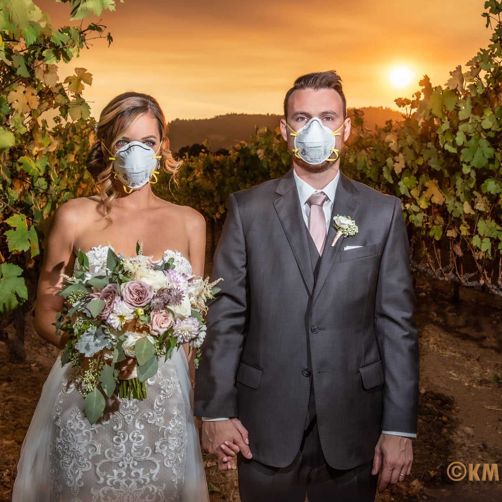

Affecting your love life:
Pandemic dating makes the already complicated matter of trying to find an intimate partner feel impossible. Nevertheless, try not to forget that dating can still be fun during a pandemic. Your relationship can still stay alive and you can still go out on those dates with outdoor dining as long as you take the best safety measures we can before doing so. Yes, it is not what we want to do, but dating in person has been dramatically changed due to the virus so we must do our part in order to go back to way things used to be.

All we can do...:
Parnaz Ho"